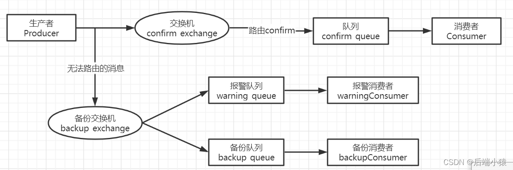

SpringBoot整合RabbitMQ
【MQ中间件】RabbitMQ – SpringBoot整合RabbitMQ
基于SpringBoot配置类构建消息队列
POM依赖
<!--rabbitmq starter依赖-->
<dependency>
<groupId>org.springframework.boot</groupId>
<artifactId>spring-boot-starter-amqp</artifactId>
</dependency>application.yml
#配置rabbitMq 服务器
rabbitmq:
host: 127.0.0.1
port: 5672
username: admin
password: admin
#虚拟host 可以不设置,使用server默认host
virtual-host: rrcVhost生产者配置类
配置类生成交换机与队列
配置类DirectTypeRabbitConfig
//注意：XxxType表示是交换机类型：可以是Fanout/Direct/Topic/Headers
@Configuration
public class DirectTypeRabbitConfig {
//使用注入方式声明对应的Queue
@Bean
public Queue emailQueue() {
// durable:是否持久化,默认是false,持久化队列：会被存储在磁盘上，当消息代理重启时仍然存在，暂存队列：当前连接有效
// exclusive:默认也是false，只能被当前创建的连接使用，而且当连接关闭后队列即被删除。此参考优先级高于durable
// autoDelete:是否自动删除，当没有生产者或者消费者使用此队列，该队列会自动删除。
//一般设置一下队列的持久化就好,其余两个就是默认false
return new Queue("email.DirectType.queue", true);
}
//声明交换机，不同的交换机类型不同：DirectExchange/FanoutExchange/TopicExchange/HeadersExchange
@Bean
public DirectTypeExchange DirectTypeOrderExchange() {
// durable:是否持久化,默认是true,持久化队列：会被存储在磁盘上，当消息代理重启时仍然存在，暂存队列：当前连接有效
// autoDelete:是否自动删除，当没有生产者或者消费者使用此队列，该队列会自动删除。默认false
return new DirectTypeExchange("DirectType_order_exchange", true, false);
}
//绑定关系：将队列和交换机绑定, 并设置用于匹配键：routingKey
@Bean
public Binding bindingXxxType1() {
return BindingBuilder
.bind(emailQueue()) //绑定哪个Queue
.to(xxxTypeOrderExchange())
.with("routingKey");//fanout这里绑定Queues的时候不要设置routing key，是采用广播订阅发送的方式`
}
}消息发送类，主要给创建的队列填充消息，这里主要用到RabbitTemplate类调用convertAndSend方法进行对应交换机消息队列的发送：
rabbitTemplate.convertAndSend(String exchange, String routingKey, Object object)消费者配置类
Direct模式消息消费者
//通过@RabbitListener绑定队列接收消息
@RabbitListener(queues = {"weixin.direct.queue"})
@Component
public class DirectDuanxinConsumer {
//队列中的消息会通过@RabbitHandler注解注入到方法参数中，就可以获取到队列中的消息
@RabbitHandler
public void reviceMessage(String message){
System.out.println("duanxin direct queue----接收到了订单信息是：->" + message);
}
}Topic模式消息消费者
//通过@RabbitListener绑定队列接收消息
// bindings其实就是用来确定队列和交换机绑定关系
@RabbitListener(bindings = @QueueBinding(
//队列名字，绑定对应的队列接收消息
value = @Queue(value = "weixin.topic.queue", autoDelete = "false"),
//交换机名字，必须和生产者中交换机名相同；指定绑定的交换机类型
exchange = @Exchange(value = "topic_order_exchange", type = ExchangeTypes.TOPIC),
key = "com.#"
))
@Component
public class TopicDuanxinConsumer {
//队列中的消息会通过@RabbitHandler注解注入到方法参数中，就可以获取到队列中的消息
@RabbitHandler
public void reviceMessage(String message){
System.out.println("duanxin topic----接收到了订单信息是：->" + message);
}
}生产者确认
#配置rabbitMq 服务器
rabbitmq:
host: 127.0.0.1
port: 5672
username: admin
password: admin
#虚拟host 可以不设置,使用server默认host
virtual-host: rrcVhost
#确认消息已发送到交换机(Exchange)
publisher-confirm-type: correlated
#确认消息已发送到队列(Queue)
publisher-returns: true配置相关的消息确认回调函数，RabbitConfig.java
@Configuration
public class RabbitConfig {
@Bean
public RabbitTemplate createRabbitTemplate(ConnectionFactory connectionFactory){
RabbitTemplate rabbitTemplate = new RabbitTemplate();
rabbitTemplate.setConnectionFactory(connectionFactory);
//设置开启Mandatory,才能触发回调函数,无论消息推送结果怎么样都强制调用回调函数
rabbitTemplate.setMandatory(true);
rabbitTemplate.setConfirmCallback(new RabbitTemplate.ConfirmCallback() {
@Override
public void confirm(CorrelationData correlationData, boolean ack, String cause) {
System.out.println("ConfirmCallback: "+"相关数据："+correlationData);
System.out.println("ConfirmCallback: "+"确认情况："+ack);
System.out.println("ConfirmCallback: "+"原因："+cause);
}
});
rabbitTemplate.setReturnsCallback(new RabbitTemplate.ReturnsCallback() {
@Override
public void returnedMessage(ReturnedMessage returnedMessage) {
System.out.println("ReturnCallback: "+"消息："+returnedMessage.getMessage());
System.out.println("ReturnCallback: "+"回应码："+returnedMessage.getReplyCode());
System.out.println("ReturnCallback: "+"回应信息："+ returnedMessage.getReplyText());
System.out.println("ReturnCallback: "+"交换机："+ returnedMessage.getExchange());
System.out.println("ReturnCallback: "+"路由键："+ returnedMessage.getRoutingKey());
}
});
return rabbitTemplate;
}
}可以看到上面写了两个回调函数，一个叫 ConfirmCallback ，一个叫 RetrunCallback；
那么以上这两种回调函数都是在什么情况会触发呢？
先从总体的情况分析，推送消息存在四种情况：
- 消息推送到server，但是在server里找不到交换机
- 消息推送到server，找到交换机了，但是没找到队列
- 消息推送到sever，交换机和队列啥都没找到
- 消息推送成功
情形1：
ConfirmCallback: 相关数据：null
ConfirmCallback: 确认情况：false
ConfirmCallback: 原因：channel error; protocol method: #method<channel.close>(reply-code=404, reply-text=NOT_FOUND - no exchange 'TestDirectDurableExchange1111' in vhost 'rrcVhost', class-id=60, method-id=40)触发的是 ConfirmCallback 回调函数
情形2：
CASE 1：新增一个交换机lonelyDirectExchange，但是不给这个交换机绑定队列。
ReturnCallback: 消息：(Body:'{createTime=2022-11-13 13:42:55, messageId=i=========0, messageData=test message, hello!}' MessageProperties [headers={}, contentType=application/x-java-serialized-object, contentLength=0, receivedDeliveryMode=PERSISTENT, priority=0, deliveryTag=0])
ReturnCallback: 回应码：312
ReturnCallback: 回应信息：NO_ROUTE
ReturnCallback: 交换机：lonelyDirectExchange
ReturnCallback: 路由键：TestDirectDurableRouting
ConfirmCallback: 相关数据：null
ConfirmCallback: 确认情况：true
ConfirmCallback: 原因：nullCASE 2：使用错误的routingKey。
ReturnCallback: 消息：(Body:'{createTime=2022-11-13 13:46:32, messageId=i=========0, messageData=test message, hello!}' MessageProperties [headers={}, contentType=application/x-java-serialized-object, contentLength=0, receivedDeliveryMode=PERSISTENT, priority=0, deliveryTag=0])
ReturnCallback: 回应码：312
ReturnCallback: 回应信息：NO_ROUTE
ReturnCallback: 交换机：TestDirectDurableExchange
ReturnCallback: 路由键：TestDirectDurableRouting9999
ConfirmCallback: 相关数据：null
ConfirmCallback: 确认情况：true
ConfirmCallback: 原因：null可以看到两个函数都被调用了；这种情况下，消息是推送成功到服务器了的，所以ConfirmCallback对消息确认情况是true；
而在RetrunCallback回调函数的打印参数里面可以看到，消息是推送到了交换机成功了，但是在路由分发给队列的时候，找不到队列，所以报了错误 NO_ROUTE 。
结论：这种情况触发的是 ConfirmCallback和RetrunCallback两个回调函数。
情形3：
消息推送到sever，交换机和队列啥都没找到。这种情况其实一看就觉得跟①很像，没错 ，③和①情况回调是一致的，所以不做结果说明了。
结论： 这种情况触发的是 ConfirmCallback 回调函数。
情形4：
ConfirmCallback: 相关数据：null
ConfirmCallback: 确认情况：true
ConfirmCallback: 原因：null正常成功的消息推送触发ConfirmCallback 回调函数。
以上是生产者推送消息的消息确认 回调函数的使用介绍（可以在回调函数根据需求做对应的扩展或者业务数据处理）。
消息确认机制
和生产者的消息确认机制不同，因为消息接收本来就是在监听消息，符合条件的消息就会消费下来。
所以，消息接收的确认机制主要存在三种模式：
自动确认
默认的消息确认情况。 AcknowledgeMode.NONE
RabbitMQ成功将消息发出（即将消息成功写入TCP Socket）中立即认为本次投递已经被正确处理，不管消费者端是否成功处理本次投递。
所以这种情况如果消费端消费逻辑抛出异常，也就是消费端没有处理成功这条消息，那么就相当于丢失了消息。
一般这种情况我们都是使用try catch捕捉异常后，打印日志用于追踪数据，这样找出对应数据再做后续处理。
根据情况确认
这个不做介绍
手动确认
我们配置接收消息确认机制时，多数选择的模式。
消费者收到消息后，手动调用basic.ack/basic.nack/basic.reject后，RabbitMQ收到这些消息后，才认为本次投递成功。
basic.ack用于肯定确认
basic.nack用于否定确认（注意：这是AMQP 0-9-1的RabbitMQ扩展）
basic.reject用于否定确认，但与basic.nack相比有一个限制:一次只能拒绝单条消息
消费者端以上的3个方法都表示消息已经被正确投递，但是basic.ack表示消息已经被正确处理。
而basic.nack,basic.reject表示没有被正确处理：
着重讲下reject，因为有时候一些场景是需要重新入列的。
channel.basicReject(deliveryTag, true); 拒绝消费当前消息，如果第二参数传入true，就是将数据重新丢回队列里，那么下次还会消费这消息。设置false，就是告诉服务器，我已经知道这条消息数据了，因为一些原因拒绝它，而且服务器也把这个消息丢掉就行。 下次不想再消费这条消息了。
使用拒绝后重新入列这个确认模式要谨慎，因为一般都是出现异常的时候，catch异常再拒绝入列，选择是否重入列。
但是如果使用不当会导致一些每次都被你重入列的消息一直消费-入列-消费-入列这样循环，会导致消息积压。
顺便也简单讲讲 nack，这个也是相当于设置不消费某条消息。
channel.basicNack(deliveryTag, false, true);
第一个参数依然是当前消息到的数据的唯一id;
第二个参数是指是否针对多条消息；如果是true，也就是说一次性针对当前通道的消息的tagID小于当前这条消息的，都拒绝确认。
第三个参数是指是否重新入列，也就是指不确认的消息是否重新丢回到队列里面去。
同样使用不确认后重新入列这个确认模式要谨慎，因为这里也可能因为考虑不周出现消息一直被重新丢回去的情况，导致积压。
mandatory与备份交换机(Alternate Exchange)
备份交换机：为一个普通交换机添加一个”备胎“，当交换机接收到一条无法路由的消息时，就会把消息转发给备份交换机，有备份交换机来转发和处理，该交换机类型一般为”fanout“型，这样就可以把所有消息发送到与其绑定队列中去。
案例：一个生产者发送一条路由不通的消息，看看备份交换机如何处理，如下图：

当mandatory参数设为true时，交换器无法根据自身的类型和路由键找到一个符合条件的队列，那么 RabbitMQ会调用Basic.Return命令将消息返回给生产者。当mandatory参数设置为false时，出现上述情形，则消息直接被丢弃。
生产者在发送消息的时候如果不设置mandatory参数，那么消息在未被路由的情况下将会丢失;如果设置了mandatory参数，那么需要添加ReturnListener的编程逻辑，生产者的代码将变得复杂。如果既不想复杂化生产者的编程逻辑，又不想消息丢失，那么可以使用备份交换器，这样可以将未被路由的消息存储在RabbitMQ中，再在需要的时候去处理这些消息。这样可以将未被路由的消息存储在RabbitMQ中，再在需要的时候去处理这些消息。
对于备份交换器，总结了以下几种特殊情况:
如果设置的备份交换器不存在，客户端和RabbitMQ服务端都不会有异常出现，此时消息会丢失。
如果备份交换器没有绑定任何队列，客户端和RabbitMQ服务端都不会有异常出现，此时消息会丢失。
如果备份交换器没有任何匹配的队列，客户端和RabbitMQ服务端都不会有异常出现,此时消息会丢失。
如果备份交换器和mandatory参数一起使用，那么mandatory参数无效。
重试机制
消费端在处理消息过程中可能会报错，此时该如何重新处理消息呢？解决方案有以下两种
- 在redis或者数据库中记录重试次数，达到最大重试次数以后消息进入死信队列或者其他队列，再单独针对这些消息进行处理；
- 使用spring-rabbit中自带的retry功能；
相关配置：
#配置rabbitMq 服务器
rabbitmq:
host: 127.0.0.1
port: 5672
username: admin
password: admin
#虚拟host 可以不设置,使用server默认host
virtual-host: rrcVhost
#确认消息已发送到交换机(Exchange)
publisher-confirm-type: correlated
#确认消息已发送到队列(Queue)
publisher-returns: true
#开启自动确认 none 手动确认 manual
listener:
simple:
#消费端限流机制必须开启手动确认
acknowledge-mode: manual
#消费端最多拉取的消息条数，签收后不满该条数才会继续拉取
prefetch: 1
retry:
enabled: true
max-attempts: 5
max-interval: 10000 # 重试最大间隔时间
initial-interval: 2000 # 重试初始间隔时间
multiplier: 2 # 间隔时间乘子，间隔时间*乘子=下一次的间隔时间，最大不能超过设置的最大间隔时间日志打印：
[TRACEID:] 2022-11-13 18:08:13.391 [org.springframework.amqp.rabbit.RabbitListenerEndpointContainer#0-1-21] INFO com.wql.consumer.DirectReceiver 21 listenMessage - 成功接收到消息：(Body:'{createTime=2022-11-13 18:08:13, messageId=i=========0, messageData=test message, hello!}' MessageProperties [headers={}, contentType=application/x-java-serialized-object, contentLength=0, receivedDeliveryMode=PERSISTENT, priority=0, redelivered=false, receivedExchange=TestDirectDurableExchange, receivedRoutingKey=TestDirectDurableRouting, deliveryTag=1, consumerTag=amq.ctag-1pjqPhATqOrYTl1qTTmlEg, consumerQueue=TestDirectDurableQueue])
[TRACEID:] 2022-11-13 18:08:15.406 [org.springframework.amqp.rabbit.RabbitListenerEndpointContainer#0-1-21] INFO com.wql.consumer.DirectReceiver 21 listenMessage - 成功接收到消息：(Body:'{createTime=2022-11-13 18:08:13, messageId=i=========0, messageData=test message, hello!}' MessageProperties [headers={}, contentType=application/x-java-serialized-object, contentLength=0, receivedDeliveryMode=PERSISTENT, priority=0, redelivered=false, receivedExchange=TestDirectDurableExchange, receivedRoutingKey=TestDirectDurableRouting, deliveryTag=1, consumerTag=amq.ctag-1pjqPhATqOrYTl1qTTmlEg, consumerQueue=TestDirectDurableQueue])
[TRACEID:] 2022-11-13 18:08:15.423 [AMQP Connection 127.0.0.1:5672-748] ERROR o.s.a.r.c.CachingConnectionFactory 748 log - Shutdown Signal: channel error; protocol method: #method<channel.close>(reply-code=406, reply-text=PRECONDITION_FAILED - unknown delivery tag 1, class-id=60, method-id=80)
[TRACEID:] 2022-11-13 18:08:19.418 [org.springframework.amqp.rabbit.RabbitListenerEndpointContainer#0-1-21] INFO com.wql.consumer.DirectReceiver 21 listenMessage - 成功接收到消息：(Body:'{createTime=2022-11-13 18:08:13, messageId=i=========0, messageData=test message, hello!}' MessageProperties [headers={}, contentType=application/x-java-serialized-object, contentLength=0, receivedDeliveryMode=PERSISTENT, priority=0, redelivered=false, receivedExchange=TestDirectDurableExchange, receivedRoutingKey=TestDirectDurableRouting, deliveryTag=1, consumerTag=amq.ctag-1pjqPhATqOrYTl1qTTmlEg, consumerQueue=TestDirectDurableQueue])
[TRACEID:] 2022-11-13 18:08:27.453 [org.springframework.amqp.rabbit.RabbitListenerEndpointContainer#0-1-21] INFO com.wql.consumer.DirectReceiver 21 listenMessage - 成功接收到消息：(Body:'{createTime=2022-11-13 18:08:13, messageId=i=========0, messageData=test message, hello!}' MessageProperties [headers={}, contentType=application/x-java-serialized-object, contentLength=0, receivedDeliveryMode=PERSISTENT, priority=0, redelivered=false, receivedExchange=TestDirectDurableExchange, receivedRoutingKey=TestDirectDurableRouting, deliveryTag=1, consumerTag=amq.ctag-1pjqPhATqOrYTl1qTTmlEg, consumerQueue=TestDirectDurableQueue])
[TRACEID:] 2022-11-13 18:08:27.455 [AMQP Connection 127.0.0.1:5672-748] ERROR o.s.a.r.c.CachingConnectionFactory 748 log - Shutdown Signal: channel error; protocol method: #method<channel.close>(reply-code=406, reply-text=PRECONDITION_FAILED - unknown delivery tag 1, class-id=60, method-id=80)
[TRACEID:] 2022-11-13 18:08:37.464 [org.springframework.amqp.rabbit.RabbitListenerEndpointContainer#0-1-21] INFO com.wql.consumer.DirectReceiver 21 listenMessage - 成功接收到消息：(Body:'{createTime=2022-11-13 18:08:13, messageId=i=========0, messageData=test message, hello!}' MessageProperties [headers={}, contentType=application/x-java-serialized-object, contentLength=0, receivedDeliveryMode=PERSISTENT, priority=0, redelivered=false, receivedExchange=TestDirectDurableExchange, receivedRoutingKey=TestDirectDurableRouting, deliveryTag=1, consumerTag=amq.ctag-1pjqPhATqOrYTl1qTTmlEg, consumerQueue=TestDirectDurableQueue])
[TRACEID:] 2022-11-13 18:08:37.474 [org.springframework.amqp.rabbit.RabbitListenerEndpointContainer#0-1-74] WARN o.s.a.r.r.RejectAndDontRequeueRecoverer 74 recover - Retries exhausted for message (Body:'{createTime=2022-11-13 18:08:13, messageId=i=========0, messageData=test message, hello!}' MessageProperties [headers={}, contentType=application/x-java-serialized-object, contentLength=0, receivedDeliveryMode=PERSISTENT, priority=0, redelivered=false, receivedExchange=TestDirectDurableExchange, receivedRoutingKey=TestDirectDurableRouting, deliveryTag=1, consumerTag=amq.ctag-1pjqPhATqOrYTl1qTTmlEg, consumerQueue=TestDirectDurableQueue])org.springframework.amqp.rabbit.support.ListenerExecutionFailedException: Listener method 'public void com.wql.consumer.DirectReceiver.listenMessage(org.springframework.amqp.core.Message,com.rabbitmq.client.Channel) throws java.io.IOException,java.lang.InterruptedException' threw exception
at org.springframework.amqp.rabbit.listener.adapter.MessagingMessageListenerAdapter.invokeHandler(MessagingMessageListenerAdapter.java:230)
at org.springframework.amqp.rabbit.listener.adapter.MessagingMessageListenerAdapter.invokeHandlerAndProcessResult(MessagingMessageListenerAdapter.java:150)
at org.springframework.amqp.rabbit.listener.adapter.MessagingMessageListenerAdapter.onMessage(MessagingMessageListenerAdapter.java:135)
at org.springframework.amqp.rabbit.listener.AbstractMessageListenerContainer.doInvokeListener(AbstractMessageListenerContainer.java:1650)
at org.springframework.amqp.rabbit.listener.AbstractMessageListenerContainer.actualInvokeListener(AbstractMessageListenerContainer.java:1569)
at sun.reflect.NativeMethodAccessorImpl.invoke0(Native Method)
at sun.reflect.NativeMethodAccessorImpl.invoke(NativeMethodAccessorImpl.java:62)
at sun.reflect.DelegatingMethodAccessorImpl.invoke(DelegatingMethodAccessorImpl.java:43)
at java.lang.reflect.Method.invoke(Method.java:498)
at org.springframework.aop.support.AopUtils.invokeJoinpointUsingReflection(AopUtils.java:344)
at org.springframework.aop.framework.ReflectiveMethodInvocation.invokeJoinpoint(ReflectiveMethodInvocation.java:198)
at org.springframework.aop.framework.ReflectiveMethodInvocation.proceed(ReflectiveMethodInvocation.java:163)
at org.springframework.retry.interceptor.RetryOperationsInterceptor$1.doWithRetry(RetryOperationsInterceptor.java:93)
at org.springframework.retry.support.RetryTemplate.doExecute(RetryTemplate.java:329)
at org.springframework.retry.support.RetryTemplate.execute(RetryTemplate.java:225)
at org.springframework.retry.interceptor.RetryOperationsInterceptor.invoke(RetryOperationsInterceptor.java:116)
at org.springframework.aop.framework.ReflectiveMethodInvocation.proceed(ReflectiveMethodInvocation.java:186)
at org.springframework.aop.framework.JdkDynamicAopProxy.invoke(JdkDynamicAopProxy.java:215)
at org.springframework.amqp.rabbit.listener.$Proxy143.invokeListener(Unknown Source)
at org.springframework.amqp.rabbit.listener.AbstractMessageListenerContainer.invokeListener(AbstractMessageListenerContainer.java:1557)
at org.springframework.amqp.rabbit.listener.AbstractMessageListenerContainer.doExecuteListener(AbstractMessageListenerContainer.java:1548)
at org.springframework.amqp.rabbit.listener.AbstractMessageListenerContainer.executeListener(AbstractMessageListenerContainer.java:1492)
at org.springframework.amqp.rabbit.listener.SimpleMessageListenerContainer.doReceiveAndExecute(SimpleMessageListenerContainer.java:968)
at org.springframework.amqp.rabbit.listener.SimpleMessageListenerContainer.receiveAndExecute(SimpleMessageListenerContainer.java:914)
at org.springframework.amqp.rabbit.listener.SimpleMessageListenerContainer.access$1600(SimpleMessageListenerContainer.java:83)
at org.springframework.amqp.rabbit.listener.SimpleMessageListenerContainer$AsyncMessageProcessingConsumer.mainLoop(SimpleMessageListenerContainer.java:1289)
at org.springframework.amqp.rabbit.listener.SimpleMessageListenerContainer$AsyncMessageProcessingConsumer.run(SimpleMessageListenerContainer.java:1195)
at java.lang.Thread.run(Thread.java:745)
Caused by: org.springframework.amqp.AmqpException: PublisherCallbackChannel is closed
at org.springframework.amqp.rabbit.connection.CachingConnectionFactory$CachedChannelInvocationHandler.invoke(CachingConnectionFactory.java:1139)
at com.sun.proxy.$Proxy144.basicAck(Unknown Source)
at com.wql.consumer.DirectReceiver.listenMessage(DirectReceiver.java:29)
at sun.reflect.NativeMethodAccessorImpl.invoke0(Native Method)
at sun.reflect.NativeMethodAccessorImpl.invoke(NativeMethodAccessorImpl.java:62)
at sun.reflect.DelegatingMethodAccessorImpl.invoke(DelegatingMethodAccessorImpl.java:43)
at java.lang.reflect.Method.invoke(Method.java:498)
at org.springframework.messaging.handler.invocation.InvocableHandlerMethod.doInvoke(InvocableHandlerMethod.java:171)
at org.springframework.messaging.handler.invocation.InvocableHandlerMethod.invoke(InvocableHandlerMethod.java:120)
at org.springframework.amqp.rabbit.listener.adapter.HandlerAdapter.invoke(HandlerAdapter.java:68)
at org.springframework.amqp.rabbit.listener.adapter.MessagingMessageListenerAdapter.invokeHandler(MessagingMessageListenerAdapter.java:222)
... 27 common frames omitted
[TRACEID:] 2022-11-13 18:08:37.476 [org.springframework.amqp.rabbit.RabbitListenerEndpointContainer#0-1-169] WARN o.s.a.r.l.ConditionalRejectingErrorHandler 169 log - Execution of Rabbit message listener failed.org.springframework.amqp.rabbit.support.ListenerExecutionFailedException: Retry Policy Exhausted
at org.springframework.amqp.rabbit.retry.RejectAndDontRequeueRecoverer.recover(RejectAndDontRequeueRecoverer.java:76)
at org.springframework.amqp.rabbit.config.StatelessRetryOperationsInterceptorFactoryBean.lambda$createRecoverer$0(StatelessRetryOperationsInterceptorFactoryBean.java:74)
at org.springframework.retry.interceptor.RetryOperationsInterceptor$ItemRecovererCallback.recover(RetryOperationsInterceptor.java:142)
at org.springframework.retry.support.RetryTemplate.handleRetryExhausted(RetryTemplate.java:539)
at org.springframework.retry.support.RetryTemplate.doExecute(RetryTemplate.java:387)
at org.springframework.retry.support.RetryTemplate.execute(RetryTemplate.java:225)
at org.springframework.retry.interceptor.RetryOperationsInterceptor.invoke(RetryOperationsInterceptor.java:116)
at org.springframework.aop.framework.ReflectiveMethodInvocation.proceed(ReflectiveMethodInvocation.java:186)
at org.springframework.aop.framework.JdkDynamicAopProxy.invoke(JdkDynamicAopProxy.java:215)
at org.springframework.amqp.rabbit.listener.$Proxy143.invokeListener(Unknown Source)
at org.springframework.amqp.rabbit.listener.AbstractMessageListenerContainer.invokeListener(AbstractMessageListenerContainer.java:1557)
at org.springframework.amqp.rabbit.listener.AbstractMessageListenerContainer.doExecuteListener(AbstractMessageListenerContainer.java:1548)
at org.springframework.amqp.rabbit.listener.AbstractMessageListenerContainer.executeListener(AbstractMessageListenerContainer.java:1492)
at org.springframework.amqp.rabbit.listener.SimpleMessageListenerContainer.doReceiveAndExecute(SimpleMessageListenerContainer.java:968)
at org.springframework.amqp.rabbit.listener.SimpleMessageListenerContainer.receiveAndExecute(SimpleMessageListenerContainer.java:914)
at org.springframework.amqp.rabbit.listener.SimpleMessageListenerContainer.access$1600(SimpleMessageListenerContainer.java:83)
at org.springframework.amqp.rabbit.listener.SimpleMessageListenerContainer$AsyncMessageProcessingConsumer.mainLoop(SimpleMessageListenerContainer.java:1289)
at org.springframework.amqp.rabbit.listener.SimpleMessageListenerContainer$AsyncMessageProcessingConsumer.run(SimpleMessageListenerContainer.java:1195)
at java.lang.Thread.run(Thread.java:745)
Caused by: org.springframework.amqp.AmqpRejectAndDontRequeueException: null
... 19 common frames omitted
Caused by: org.springframework.amqp.rabbit.support.ListenerExecutionFailedException: Listener method 'public void com.wql.consumer.DirectReceiver.listenMessage(org.springframework.amqp.core.Message,com.rabbitmq.client.Channel) throws java.io.IOException,java.lang.InterruptedException' threw exception
at org.springframework.amqp.rabbit.listener.adapter.MessagingMessageListenerAdapter.invokeHandler(MessagingMessageListenerAdapter.java:230)
at org.springframework.amqp.rabbit.listener.adapter.MessagingMessageListenerAdapter.invokeHandlerAndProcessResult(MessagingMessageListenerAdapter.java:150)
at org.springframework.amqp.rabbit.listener.adapter.MessagingMessageListenerAdapter.onMessage(MessagingMessageListenerAdapter.java:135)
at org.springframework.amqp.rabbit.listener.AbstractMessageListenerContainer.doInvokeListener(AbstractMessageListenerContainer.java:1650)
at org.springframework.amqp.rabbit.listener.AbstractMessageListenerContainer.actualInvokeListener(AbstractMessageListenerContainer.java:1569)
at sun.reflect.NativeMethodAccessorImpl.invoke0(Native Method)
at sun.reflect.NativeMethodAccessorImpl.invoke(NativeMethodAccessorImpl.java:62)
at sun.reflect.DelegatingMethodAccessorImpl.invoke(DelegatingMethodAccessorImpl.java:43)
at java.lang.reflect.Method.invoke(Method.java:498)
at org.springframework.aop.support.AopUtils.invokeJoinpointUsingReflection(AopUtils.java:344)
at org.springframework.aop.framework.ReflectiveMethodInvocation.invokeJoinpoint(ReflectiveMethodInvocation.java:198)
at org.springframework.aop.framework.ReflectiveMethodInvocation.proceed(ReflectiveMethodInvocation.java:163)
at org.springframework.retry.interceptor.RetryOperationsInterceptor$1.doWithRetry(RetryOperationsInterceptor.java:93)
at org.springframework.retry.support.RetryTemplate.doExecute(RetryTemplate.java:329)
... 14 common frames omitted
Caused by: org.springframework.amqp.AmqpException: PublisherCallbackChannel is closed
at org.springframework.amqp.rabbit.connection.CachingConnectionFactory$CachedChannelInvocationHandler.invoke(CachingConnectionFactory.java:1139)
at com.sun.proxy.$Proxy144.basicAck(Unknown Source)
at com.wql.consumer.DirectReceiver.listenMessage(DirectReceiver.java:29)
at sun.reflect.NativeMethodAccessorImpl.invoke0(Native Method)
at sun.reflect.NativeMethodAccessorImpl.invoke(NativeMethodAccessorImpl.java:62)
at sun.reflect.DelegatingMethodAccessorImpl.invoke(DelegatingMethodAccessorImpl.java:43)
at java.lang.reflect.Method.invoke(Method.java:498)
at org.springframework.messaging.handler.invocation.InvocableHandlerMethod.doInvoke(InvocableHandlerMethod.java:171)
at org.springframework.messaging.handler.invocation.InvocableHandlerMethod.invoke(InvocableHandlerMethod.java:120)
at org.springframework.amqp.rabbit.listener.adapter.HandlerAdapter.invoke(HandlerAdapter.java:68)
at org.springframework.amqp.rabbit.listener.adapter.MessagingMessageListenerAdapter.invokeHandler(MessagingMessageListenerAdapter.java:222)
... 27 common frames omitted
[TRACEID:] 2022-11-13 18:08:37.483 [org.springframework.amqp.rabbit.RabbitListenerEndpointContainer#0-1-1429] INFO o.s.a.r.l.SimpleMessageListenerContainer 1429 killOrRestart - Restarting Consumer@208185c0: tags=[[amq.ctag-1pjqPhATqOrYTl1qTTmlEg]], channel=Cached Rabbit Channel: PublisherCallbackChannelImpl: AMQChannel(amqp://admin@127.0.0.1:5672/rrcVhost,9), conn: Proxy@4229b92c Shared Rabbit Connection: SimpleConnection@1fe7fa16 [delegate=amqp://admin@127.0.0.1:5672/rrcVhost, localPort= 27950], acknowledgeMode=MANUAL local queue size=0可以看到重试次数是5次（包含自身消费的一次），重试时间依次是2s，4s，8s，10s（上一次间隔时间*间隔时间乘子），最后一次重试时间理论上是16s，但是由于设置了最大间隔时间是10s，因此最后一次间隔时间只能是10s，和配置相符合。
注意：
重试并不是RabbitMQ重新发送了消息，仅仅是消费者内部进行的重试，换句话说就是重试跟mq没有任何关系；
因此上述消费者代码不能添加try{}catch(){}，一旦捕获了异常，在自动ack模式下，就相当于消息正确处理了，消息直接被确认掉了，不会触发重试的；
retry使用场景
上面说了什么是重试，以及如何解决重试造成的数据丢失，那么怎么来选择重试的使用场景呢？
是否是消费者只要发生异常就要去重试呢？其实不然，假设下面的两个场景：
http下载视频或者图片或者调用第三方接口
空指针异常或者类型转换异常（其他的受检查的运行时异常）
很显然，第一种情况有重试的意义，第二种没有。
对于第一种情况，由于网络波动等原因造成请求失败，重试是有意义的；
对于第二种情况，需要修改代码才能解决的问题，重试也没有意义，需要的是记录日志以及人工处理或者轮询任务的方式去处理。
retry最佳实践
对于消费端异常的消息，如果在有限次重试过程中消费成功是最好的，如果有限次重试之后仍然失败的消息，不管是采用RejectAndDontRequeueRecoverer还是使用死信队列都是可以的，同时也可以采用折中的方法，先将消息从业务队列中ack掉，再将消息发送到另外的一个队列中，后续再单独处理异常数据的队列。
另外，看到有人说retry只能在自动ack模式下使用，经过测试在手动ack模式下retry也是生效的，只不过不能使用catch捕获异常，即使在自动ack模式下使用catch捕获异常也是会导致不触发重试的。当然，在手动ackm模式下要记得确认消息，不管是确认消费成功还是确认消费失败，不然消息会一直处于unack状态，直到消费者进程重启或者停止。
如果一定要在手动ack模式下使用retry功能，最好还是确认在有限次重试过程中可以重试成功，否则超过重试次数，又没办法执行nack，就会出现消息一直处于unack的问题，我想这也就是所说的retry只能在自动ack模式下使用的原因，测试代码如下：
引用